Discover Your Archetype
Answer a series of questions about yourself, your values, and the way you approach the world. Your answers will reveal your unique archetype.
Relationships
Lover · Soldier · Hero
Ideals
Pragmatist · Romantic · Altruist
Behaviors
Explorer · Wayfarer · Dreamer
Choose your path.
Choose the answer that best describes you.
YOUR ARCHETYPE
The Explorer
Your Three Dimensions
Your archetype is determined by your strongest dimension in each category.
Your Traits
These traits describe additional aspects of your personality and are measured independently from your archetype.
Complete Score Breakdown
Three dimensions.
Twenty-seven possibilities.
Your archetype is formed from three dimensions: how you relate to others, the ideals that guide you, and how you tend to move through the world.
The Mage desires to be a counselor to all friends, to grow with them and go on journeys with them. They are wise and are motivated by acquiring rare knowledge. The mage is liable to react to any problem with a fireball.
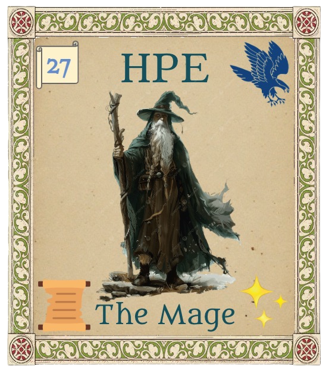
The Missionary desires to grow in viture and help those around them grow in viture as well. They learn theology and preach the truth, integrating the contemplative life with spreading the gospel.
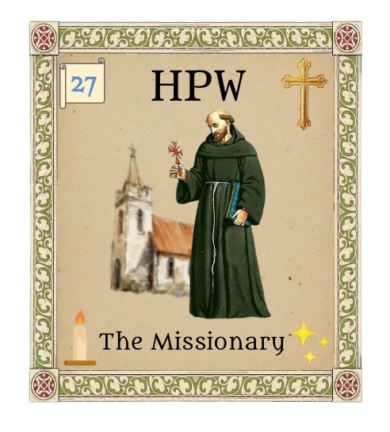
The Alchemist is focused on becoming their best self through study and practice and keeps a handful of freinds with whom they share their lofty goals. Logical and problem-solving, they are very inward and process things in their own mind.
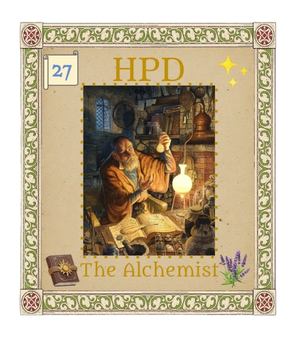
The Seafarer is an explorer at heart. They long for the sea and adventure, strive to be the best sailors they can be, and are born leaders. If they could, the seafarer would travel the world and see all the beauty it has to offer.
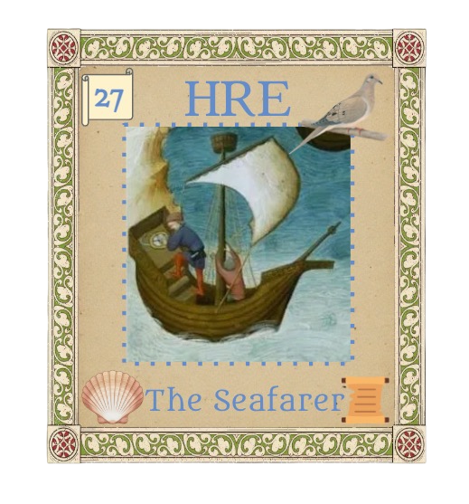
The Pilgrim has embarked once again to see beautiful holy sites and shrines! Their ideal adventure is a pilrammage for all the sights they may see and all the ways they may grow in virtue through it. The pilgrim is a friend on the road to all, but aims to fill their circles with holy people and balance their outward devotion with a contemplative life.
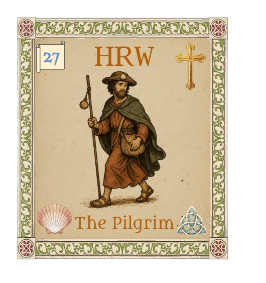
The Dryad is very encouraging and their presence eminates strength into others, though they are very inward themselves. They love nature, and one day hope to become a tree so they can enjoy the woods.
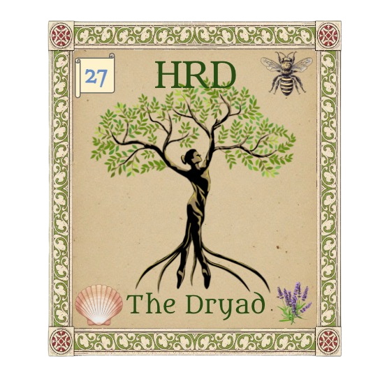
The Rebel steals from the rich and gives to the poor. Always willing to help, or cause a little mischief. The rebel is liable to start fires in a defiant fervor.
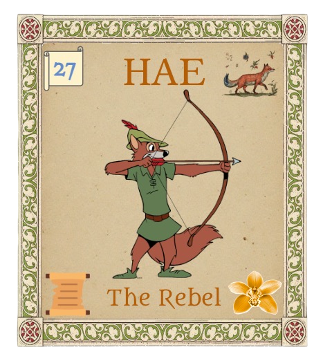
The Ranger roams the wilderness, preparing themselves for their fated duty. They have a clan of good freinds who help each other on their quests. The ranger is the drifitng stranger, who protects the vulnerable and fights for good.
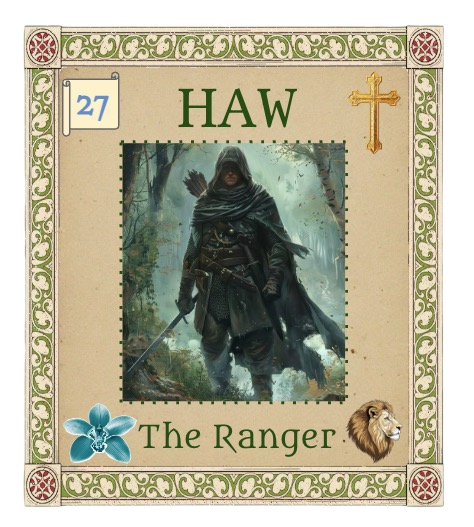
The Apothecary spends their time growing herbs and brewing potions, and always has the best remedy. Though contemplative and focused on their work, they are the most helpful people and very protective of their own. The apothecary loves bettering their garden, their recipies, and their relationships.
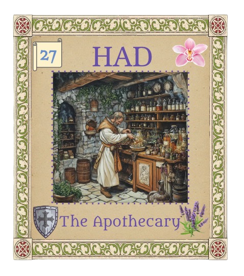
The Gentelman and the Lady are classic noble courtiers. Always desiring to be where the people are, they are well versed in the politic of the day. The gentlemen reacts to his environment, though remains stoic about it. The lady reacts to her environment, yet keeps up all appearances and charm.
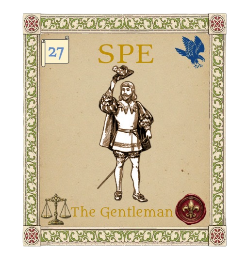
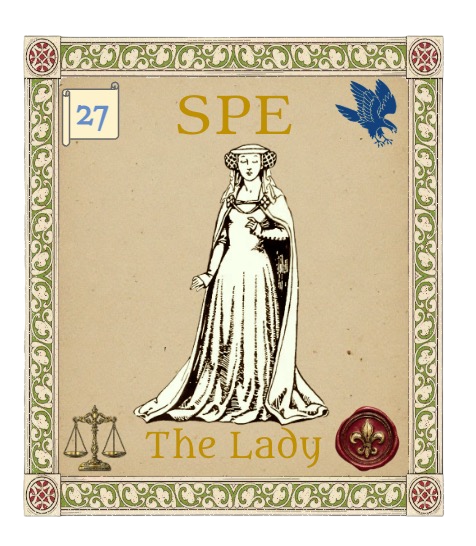
The Herald proclaims the message in full, carrying the banner of truth wherever they go. Navigating political lines and battlefields, the herald balances interactions with others and their own interior life. The herald can also play a mean bugle.
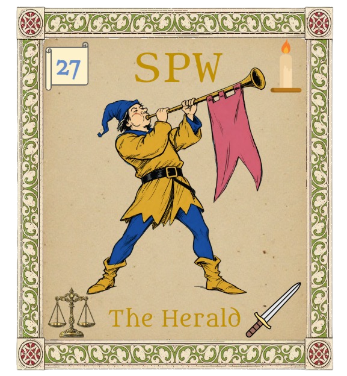
The Scholar seeks the truth through devoted study. They love to have many peers with whom they can share their work and partake in stimulating conversation. The scholar processes all they learn and experience inwardly.
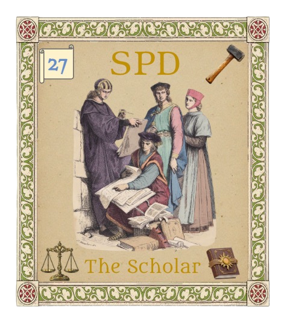
The forester is a conservationalist, and pledges their duty to consevre the beauty around them. As steward of the woods, they take in their environment and react accordingly. Ready to defend their cause at arms, the forester also longs to be among his fellow soldiers.
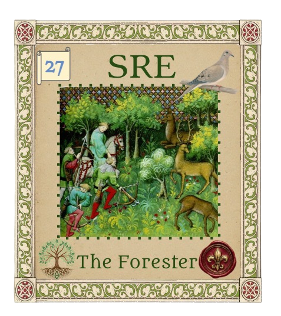
The Chieftain is the head of their tribe. Making life outside of civilized society, clung to the old ways of being conencted to nature around us, they lead a simple integrated life. A great and fatherly leader, the Chieftain loves to be among their people, and will not hesitate to defend them at arms.
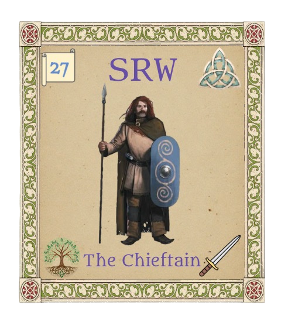
The Artisan is handy with tools and can build, fix, or design anything. They are believe all useful things can be beautiful, too. The artisan is self-reflective, devoted to craftmanship, and loyal to friends.

The Yeoman is a gracious host to travellers, and a stalwart helper to his peers and tenants. They take good care of their land, and make a good friend to have beside you in battle. An independent landowner, the yeoman does things their own way, and likes to stretch the rules.
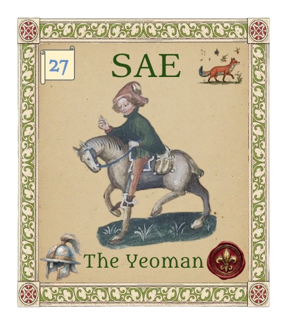
The Knight exemplifies chivalry and defends the vulnerable. They are courageous, virtuous, and magnaimous. The knight has a very good time at the local tavern.
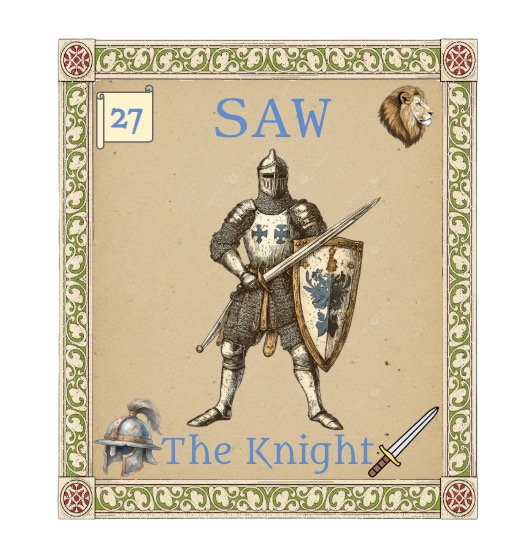
The Blacksmith loves to be with friends, but their best freinds are their hammer and anvil. Working hard in the heat of the furnace is a great environment for contemplation and self-reflection. The blacksmith is always looking to guard their friends with armour, give them meaningful metalwork that lasts, and relax with them when the work is done.
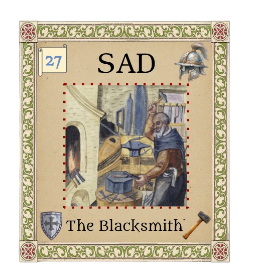
The Seer interperets the world around them and their prophecies are rooted in truth. Their wisdom seems to come from outside themselves. The seer looks through your eyes into your soul, and, above all, seeks deep knowledge of people.
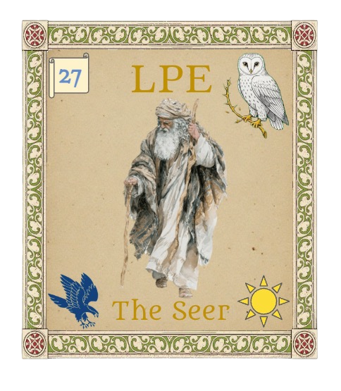
The Sage is incredibly mysterious and personable at the same time. They are incredibly wise and know how to integrate the exterior and interior lives. The sage is a fighter for the truth, and a lover for their beloved.
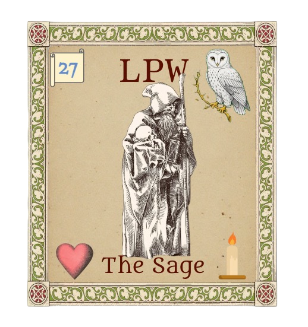
The Philosopher knows not all questions can be answered, but asks them nontheless. They are very contemplative and process their musings from within. The philosopher values meaningful relationships and always seeks the truth.

The Troubadour roves the country over sharing their music and stories with all they meet. Though they are an open-book to many, they value their deepest friendships most of all. The troubadour experiences the world with emotion and sees the beauty in and through pain.
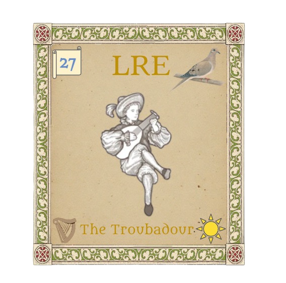
The Poet longs to write their heart out on paper, or put their soul in a poem. They do not tend to bve more inward or outward, and instead are either intently focused on the person in front of them or thinking of far off things. The poet loves only the deepest of relationships, and greatly appreciates beauty.
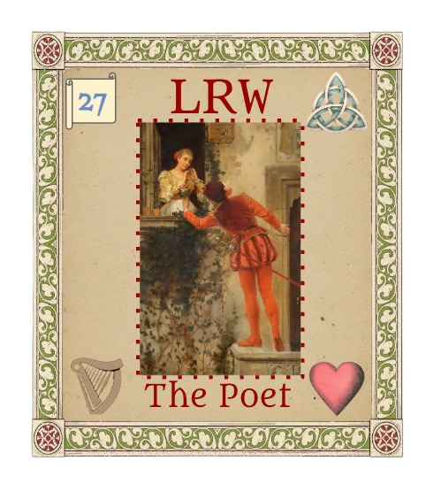
The Artist has a particular taste for beauty and a great talent in the arts. They are self-reflective and have a strong interior life. The artist wishes to capture their muse in their work in order to know them deeper, and through their art they reveal the deepest parts of themselves.
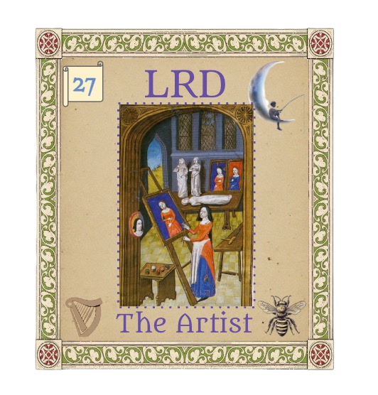
The Fairy is very caring and longs for great love and freinds for whom they can care for. They adore woodland creatures, are very playful, and value wonder and magic. The fairy often conflates their deep desire to help with their need to add a bit of mischief.
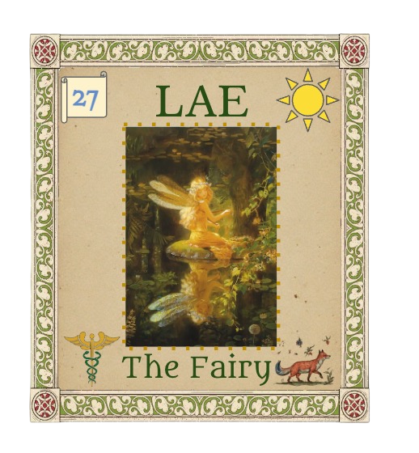
The Physician is a great healer in many ways, and they take this life work of theirs very seriously. The good doctor is very capable and balances interior processing with lived experience. The physician values goodness in people and themselves, and wants to know those close to them even closer.
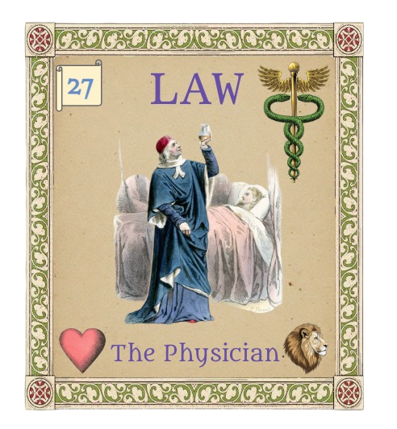
The Nymph is the mysterious water spirit who adores the sea creatures and comes to the aid of lost sailors at sea. They can often seem lonely and melancholic, but they are always ready to spread joy. The nymph is inward, caring, values depth in relationships, and upholds goodness in all they do.
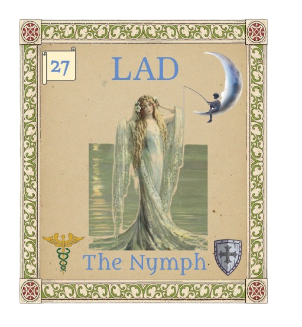
How the test works
The creators of this test have no relevant credentials. All questions, answers, and scoring was made up willy-nilly.
Lover, Soldier, or Hero. This dimension represents your natural orientation toward other people and your role within a group.
For the Lover, depth and knowledge is the main end of all types of relationships,
For the Soldier, the main end of all types of relationships is togetherness, solidarity, and shared experiences. Values loyalty, comradery, and protecting the group.
For the Hero, the main end of all types of relationships is mutual growth and shared goals. Driven to act, overcome obstacles, and make a meaningful difference in the lives of others.
Pragmatist, Romantic, or Altruist. This dimension reflects the values and principles that tend to guide your decisions.
The main motivaiton and highest ideal in the Pragmatist's life is Truth. Practical, grounded, and interested in what actually works.
The main motivation and highest ideal in the Romantic's life is Beauty. Guided by their senses and the belief that all creation holds an unfolding mystery.
The main motivation and highest ideal in teh Altruist's life is Goodness. Led by compassion, generosity, and the desire to help.
Explorer, Wayfarer, or Dreamer. This dimension describes how you tend to interact with the world.
An Explorer is informed by the external and drawn toward new experiences and possibilities. They are focused outward and react accordingly.
A wayfarer is informed by an integrated sense of self and environment. They wonder as they wander. They are more comfortable with uncertainty, but stretch their focus between inward and outward.
A dreamer is informed by introspection, their imagination, and their inner wordls. They are focused inward and rely on mental processing.
Symbols & Archetypes
Each symbol connects three archetypes that share one of the three dimensions of the archetype system. Expand a symbol to explore the three archetypes associated with it.
Mystics HPx
The Mage
The Mage desires to be a counselor to all friends, to grow with them and go on journeys with them. They are wise and are motivated by acquiring rare knowledge. The mage is liable to react to any problem with a fireball.
The Missionary
The Missionary desires to grow in virtue and help those around them grow in virtue as well. They learn theology and preach the truth, integrating the contemplative life with spreading the gospel.
The Alchemist
The Alchemist is focused on becoming their best self through study and practice and keeps a handful of friends with whom they share their lofty goals. Logical and problem-solving, they are very inward and process things in their own mind.
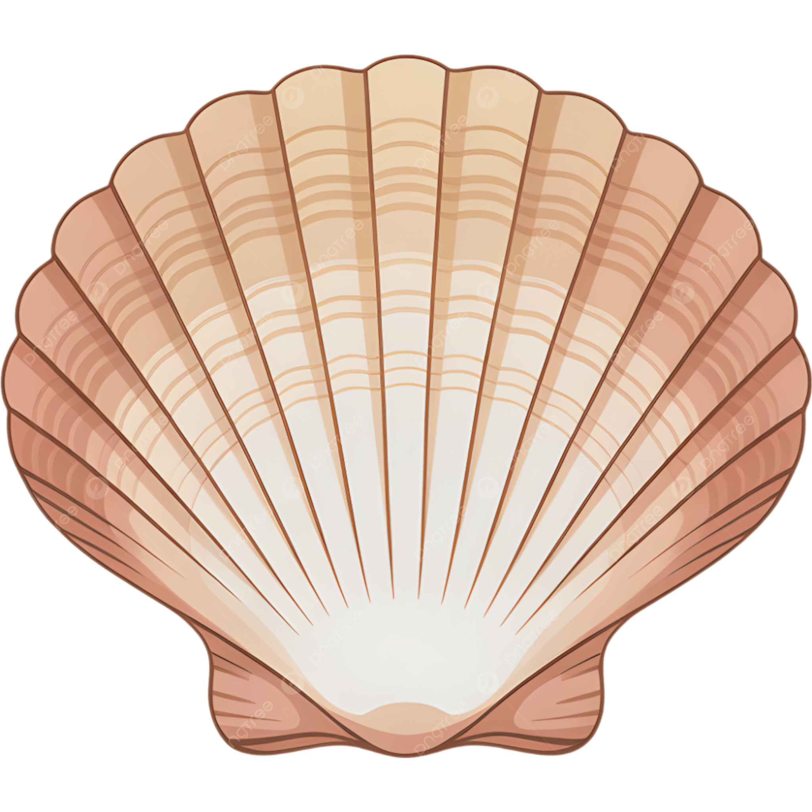
Seekers
HRx
The Seafarer
The Seafarer is an explorer at heart. They long for the sea and adventure, strive to be the best sailors they can be, and are born leaders. If they could, the seafarer would travel the world and see all the beauty it has to offer.
The Pilgrim
The Pilgrim has embarked once again to see beautiful holy sites and shrines! Their ideal adventure is a pilgrimage for all the sights they may see and all the ways they may grow in virtue through it. The pilgrim is a friend on the road to all, but aims to fill their circles with holy people and balance their outward devotion with a contemplative life.
The Dryad
The Dryad is very encouraging and their presence emanates strength into others, though they are very inward themselves. They love nature, and one day hope to become a tree so they can enjoy the woods.
Moralists HAx
The Rebel
The Rebel steals from the rich and gives to the poor. Always willing to help, or cause a little mischief. The rebel is liable to start fires in a defiant fervor.
The Ranger
The Ranger roams the wilderness, preparing themselves for their fated duty. They have a clan of good friends who help each other on their quests. The ranger is the drifting stranger, who protects the vulnerable and fights for good.
The Apothecary
The Apothecary spends their time growing herbs and brewing potions, and always has the best remedy. Though contemplative and focused on their work, they are the most helpful people and very protective of their own. The apothecary loves bettering their garden, their recipes, and their relationships.
Jurists SPx
The Gentleman / The Lady
The Gentleman and the Lady are classic noble courtiers. Always desiring to be where the people are, they are well versed in the politics of the day. The gentlemen reacts to his environment, though remains stoic about it. The lady reacts to her environment, yet keeps up all appearances and charm.
The Herald
The Herald proclaims the message in full, carrying the banner of truth wherever they go. Navigating politicsal lines and battlefields, the herald balances interactions with others and their own interior life. The herald can also play a mean bugle.
The Scholar
The Scholar seeks the truth through devoted study. They love to have many peers with whom they can share their work and partake in stimulating conversation. The scholar processes all they learn and experience inwardly.
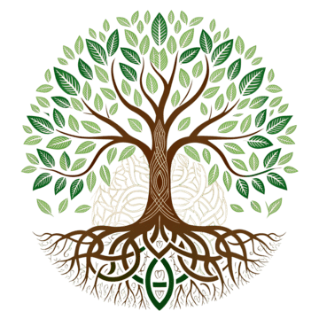
Curators
SRx
The Forester
The forester is a conservationalist, and pledges their duty to conserve the beauty around them. As steward of the woods, they take in their environment and react accordingly. Ready to defend their cause at arms, the forester also longs to be among his fellow soldiers.
The Chieftain
The Chieftain is the head of their tribe. Making life outside of civilized society, clung to the old ways of being connected to nature around us, they lead a simple integrated life. A great and fatherly leader, the Chieftain loves to be among their people, and will not hesitate to defend them at arms.
The Artisan
The Artisan is handy with tools and can build, fix, or design anything. They believe all useful things can be beautiful, too. The artisan is self-reflective, devoted to craftsmanship, and loyal to friends.
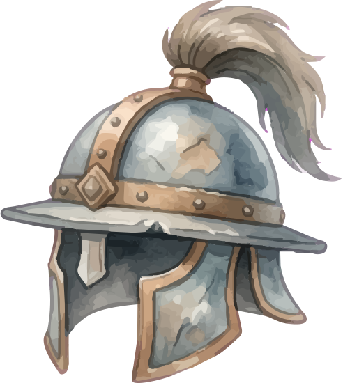
Fighters
SAx
The Yeoman
The Yeoman is a gracious host to travellers, and a stalwart helper to his peers and tenants. They take good care of their land, and make a good friend to have beside you in battle. An independent landowner, the yeoman does things their own way, and likes to stretch the rules.
The Knight
The Knight exemplifies chivalry and defends the vulnerable. They are courageous, virtuous, and magnanimous. The knight has a very good time at the local tavern.
The Blacksmith
The Blacksmith loves to be with friends, but their best friends are their hammer and anvil. Working hard in the heat of the furnace is a great environment for contemplation and self-reflection. The blacksmith is always looking to guard their friends with armour, give them meaningful metalwork that lasts, and relax with them when the work is done.
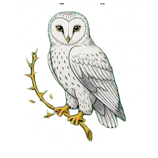
Elders
LPx
The Seer
The Seer interprets the world around them and their prophecies are rooted in truth. Their wisdom seems to come from outside themselves. The seer looks through your eyes into your soul, and, above all, seeks deep knowledge of people.
The Sage
The Sage is incredibly mysterious and personable at the same time. They are incredibly wise and know how to integrate the exterior and interior lives. The sage is a fighter for the truth, and a lover for their beloved.
The Philosopher
The Philosopher knows not all questions can be answered, but asks them nonetheless. They are very contemplative and process their musings from within. The philosopher values meaningful relationships and always seeks the truth.
Artists LRx
The Troubadour
The Troubadour roves the country over sharing their music and stories with all they meet. Though they are an open-book to many, they value their deepest friendships most of all. The troubadour experiences the world with emotion and sees the beauty in and through pain.
The Poet
The Poet longs to write their heart out on paper, or put their soul in a poem. They do not tend to be more inward or outward, and instead are either intently focused on the person in front of them or thinking of far off things. The poet loves only the deepest of relationships, and greatly appreciates beauty.
The Artist
The Artist has a particular taste for beauty and a great talent in the arts. They are self-reflective and have a strong interior life. The artist wishes to capture their muse in their work in order to know them deeper, and through their art they reveal the deepest parts of themselves.
Healers LAx
The Fairy
The Fairy is very caring and longs for great love and friends for whom they can care for. They adore woodland creatures, are very playful, and value wonder and magic. The fairy often conflates their deep desire to help with their need to add a bit of mischief.
The Physician
The Physician is a great healer in many ways, and they take this life work of theirs very seriously. The good doctor is very capable and balances interior processing with lived experience. The physician values goodness in people and themselves, and wants to know those close to them even closer.
The Nymph
The Nymph is the mysterious water spirit who adores the sea creatures and comes to the aid of lost sailors at sea. They can often seem lonely and melancholic, but they are always ready to spread joy. The nymph is inward, caring, values depth in relationships, and upholds goodness in all they do.
Arbitrators xPE
The Mage
The Mage desires to be a counselor to all friends, to grow with them and go on journeys with them. They are wise and are motivated by acquiring rare knowledge. The mage is liable to react to any problem with a fireball.
The Gentleman / The Lady
The Gentleman and the Lady are classic noble courtiers. Always desiring to be where the people are, they are well versed in the politics of the day. The gentlemen reacts to his environment, though remains stoic about it. The lady reacts to her environment, yet keeps up all appearances and charm.
The Seer
The Seer interprets the world around them and their prophecies are rooted in truth. Their wisdom seems to come from outside themselves. The seer looks through your eyes into your soul, and, above all, seeks deep knowledge of people.
Preachers xPW
The Missionary
The Missionary desires to grow in virtue and help those around them grow in virtue as well. They learn theology and preach the truth, integrating the contemplative life with spreading the gospel.
The Herald
The Herald proclaims the message in full, carrying the banner of truth wherever they go. Navigating politicsal lines and battlefields, the herald balances interactions with others and their own interior life. The herald can also play a mean bugle.
The Sage
The Sage is incredibly mysterious and personable at the same time. They are incredibly wise and know how to integrate the exterior and interior lives. The sage is a fighter for the truth, and a lover for their beloved.
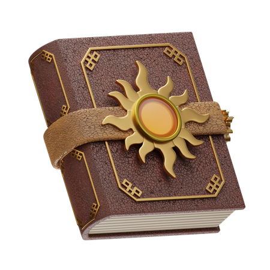
Academics
xPD
The Alchemist
The Alchemist is focused on becoming their best self through study and practice and keeps a handful of friends with whom they share their lofty goals. Logical and problem-solving, they are very inward and process things in their own mind.
The Scholar
The Scholar seeks the truth through devoted study. They love to have many peers with whom they can share their work and partake in stimulating conversation. The scholar processes all they learn and experience inwardly.
The Philosopher
The Philosopher knows not all questions can be answered, but asks them nonetheless. They are very contemplative and process their musings from within. The philosopher values meaningful relationships and always seeks the truth.
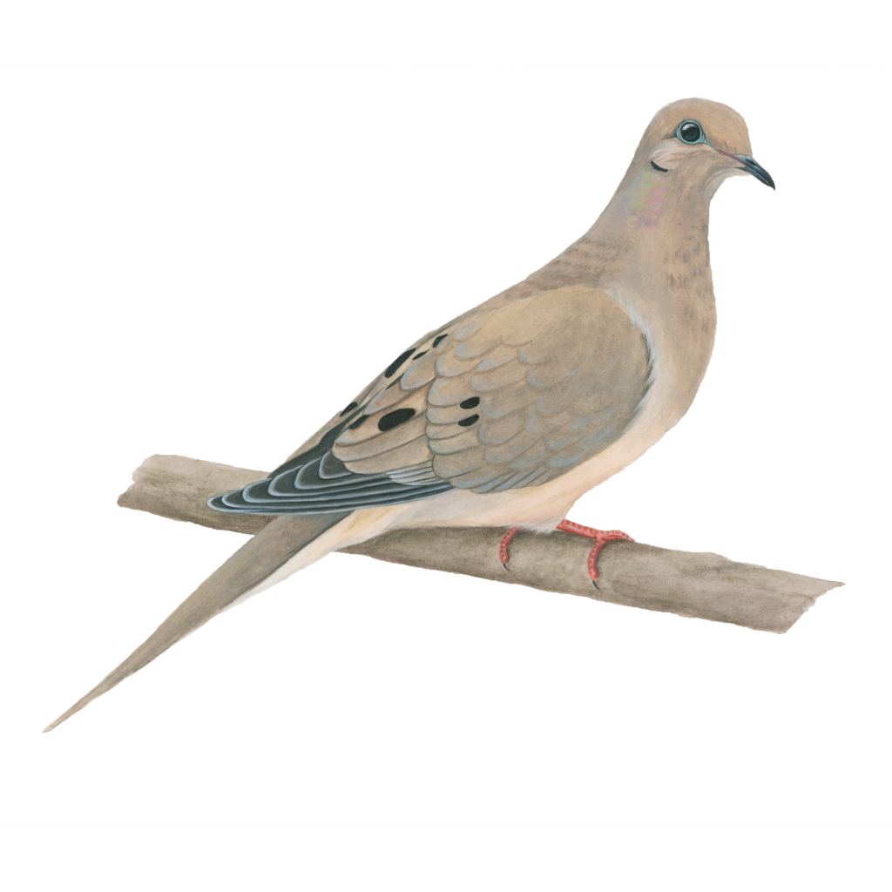
Rovers
xRE
The Seafarer
The Seafarer is an explorer at heart. They long for the sea and adventure, strive to be the best sailors they can be, and are born leaders. If they could, the seafarer would travel the world and see all the beauty it has to offer.
The Forester
The forester is a conservationalist, and pledges their duty to conserve the beauty around them. As steward of the woods, they take in their environment and react accordingly. Ready to defend their cause at arms, the forester also longs to be among his fellow soldiers.
The Troubadour
The Troubadour roves the country over sharing their music and stories with all they meet. Though they are an open-book to many, they value their deepest friendships most of all. The troubadour experiences the world with emotion and sees the beauty in and through pain.
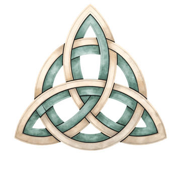
Friends
xRW
The Pilgrim
The Pilgrim has embarked once again to see beautiful holy sites and shrines! Their ideal adventure is a pilgrimage for all the sights they may see and all the ways they may grow in virtue through it. The pilgrim is a friend on the road to all, but aims to fill their circles with holy people and balance their outward devotion with a contemplative life.
The Chieftain
The Chieftain is the head of their tribe. Making life outside of civilized society, clung to the old ways of being connected to nature around us, they lead a simple integrated life. A great and fatherly leader, the Chieftain loves to be among their people, and will not hesitate to defend them at arms.
The Poet
The Poet longs to write their heart out on paper, or put their soul in a poem. They do not tend to be more inward or outward, and instead are either intently focused on the person in front of them or thinking of far off things. The poet loves only the deepest of relationships, and greatly appreciates beauty.
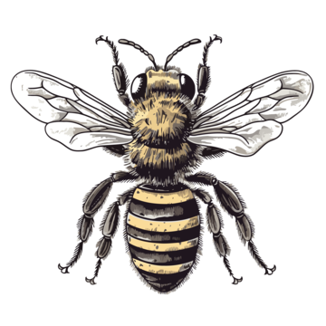
Creatives
xRD
The Dryad
The Dryad is very encouraging and their presence emanates strength into others, though they are very inward themselves. They love nature, and one day hope to become a tree so they can enjoy the woods.
The Artisan
The Artisan is handy with tools and can build, fix, or design anything. They believe all useful things can be beautiful, too. The artisan is self-reflective, devoted to craftsmanship, and loyal to friends.
The Artist
The Artist has a particular taste for beauty and a great talent in the arts. They are self-reflective and have a strong interior life. The artist wishes to capture their muse in their work in order to know them deeper, and through their art they reveal the deepest parts of themselves.
 Rebels
xAE
Rebels
xAE
The Rebel
The Rebel steals from the rich and gives to the poor. Always willing to help, or cause a little mischief. The rebel is liable to start fires in a defiant fervor.
The Yeoman
The Yeoman is a gracious host to travellers, and a stalwart helper to his peers and tenants. They take good care of their land, and make a good friend to have beside you in battle. An independent landowner, the yeoman does things their own way, and likes to stretch the rules.
The Fairy
The Fairy is very caring and longs for great love and friends for whom they can care for. They adore woodland creatures, are very playful, and value wonder and magic. The fairy often conflates their deep desire to help with their need to add a bit of mischief.
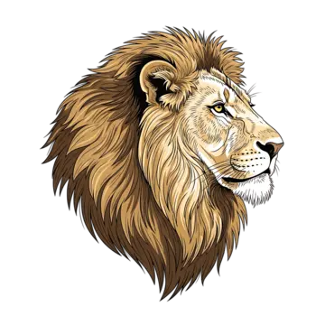
Votaries
xAW
The Ranger
The Ranger roams the wilderness, preparing themselves for their fated duty. They have a clan of good friends who help each other on their quests. The ranger is the drifting stranger, who protects the vulnerable and fights for good.
The Knight
The Knight exemplifies chivalry and defends the vulnerable. They are courageous, virtuous, and magnanimous. The knight has a very good time at the local tavern.
The Physician
The Physician is a great healer in many ways, and they take this life work of theirs very seriously. The good doctor is very capable and balances interior processing with lived experience. The physician values goodness in people and themselves, and wants to know those close to them even closer.
Guardians xAD
The Apothecary
The Apothecary spends their time growing herbs and brewing potions, and always has the best remedy. Though contemplative and focused on their work, they are the most helpful people and very protective of their own. The apothecary loves bettering their garden, their recipes, and their relationships.
The Blacksmith
The Blacksmith loves to be with friends, but their best friends are their hammer and anvil. Working hard in the heat of the furnace is a great environment for contemplation and self-reflection. The blacksmith is always looking to guard their friends with armour, give them meaningful metalwork that lasts, and relax with them when the work is done.
The Nymph
The Nymph is the mysterious water spirit who adores the sea creatures and comes to the aid of lost sailors at sea. They can often seem lonely and melancholic, but they are always ready to spread joy. The nymph is inward, caring, values depth in relationships, and upholds goodness in all they do.
Leaders HxE
The Mage
The Mage desires to be a counselor to all friends, to grow with them and go on journeys with them. They are wise and are motivated by acquiring rare knowledge. The mage is liable to react to any problem with a fireball.
The Seafarer
The Seafarer is an explorer at heart. They long for the sea and adventure, strive to be the best sailors they can be, and are born leaders. If they could, the seafarer would travel the world and see all the beauty it has to offer.
The Rebel
The Rebel steals from the rich and gives to the poor. Always willing to help, or cause a little mischief. The rebel is liable to start fires in a defiant fervor.
Zealots HxW
The Missionary
The Missionary desires to grow in virtue and help those around them grow in virtue as well. They learn theology and preach the truth, integrating the contemplative life with spreading the gospel.
The Pilgrim
The Pilgrim has embarked once again to see beautiful holy sites and shrines! Their ideal adventure is a pilgrimage for all the sights they may see and all the ways they may grow in virtue through it. The pilgrim is a friend on the road to all, but aims to fill their circles with holy people and balance their outward devotion with a contemplative life.
The Ranger
The Ranger roams the wilderness, preparing themselves for their fated duty. They have a clan of good friends who help each other on their quests. The ranger is the drifting stranger, who protects the vulnerable and fights for good.
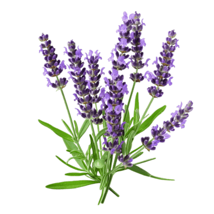
Herbalists
HxD
The Alchemist
The Alchemist is focused on becoming their best self through study and practice and keeps a handful of friends with whom they share their lofty goals. Logical and problem-solving, they are very inward and process things in their own mind.
The Dryad
The Dryad is very encouraging and their presence emanates strength into others, though they are very inward themselves. They love nature, and one day hope to become a tree so they can enjoy the woods.
The Apothecary
The Apothecary spends their time growing herbs and brewing potions, and always has the best remedy. Though contemplative and focused on their work, they are the most helpful people and very protective of their own. The apothecary loves bettering their garden, their recipes, and their relationships.
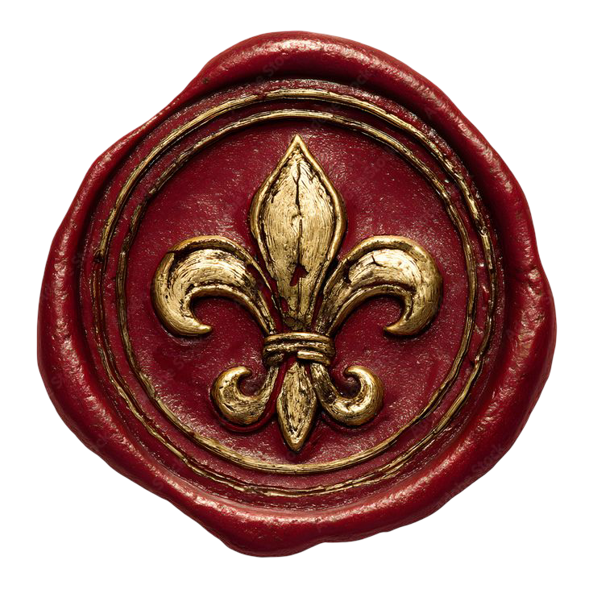
Stewards
SxE
The Gentleman / The Lady
The Gentleman and the Lady are classic noble courtiers. Always desiring to be where the people are, they are well versed in the politics of the day. The gentlemen reacts to his environment, though remains stoic about it. The lady reacts to her environment, yet keeps up all appearances and charm.
The Forester
The forester is a conservationalist, and pledges their duty to conserve the beauty around them. As steward of the woods, they take in their environment and react accordingly. Ready to defend their cause at arms, the forester also longs to be among his fellow soldiers.
The Yeoman
The Yeoman is a gracious host to travellers, and a stalwart helper to his peers and tenants. They take good care of their land, and make a good friend to have beside you in battle. An independent landowner, the yeoman does things their own way, and likes to stretch the rules.
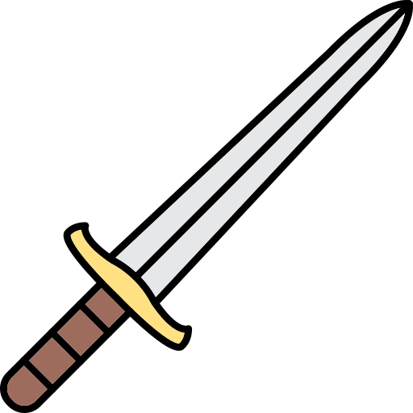
Militants
SxW
The Herald
The Herald proclaims the message in full, carrying the banner of truth wherever they go. Navigating politicsal lines and battlefields, the herald balances interactions with others and their own interior life. The herald can also play a mean bugle.
The Chieftain
The Chieftain is the head of their tribe. Making life outside of civilized society, clung to the old ways of being connected to nature around us, they lead a simple integrated life. A great and fatherly leader, the Chieftain loves to be among their people, and will not hesitate to defend them at arms.
The Knight
The Knight exemplifies chivalry and defends the vulnerable. They are courageous, virtuous, and magnanimous. The knight has a very good time at the local tavern.
Masters SxD
The Scholar
The Scholar seeks the truth through devoted study. They love to have many peers with whom they can share their work and partake in stimulating conversation. The scholar processes all they learn and experience inwardly.
The Artisan
The Artisan is handy with tools and can build, fix, or design anything. They believe all useful things can be beautiful, too. The artisan is self-reflective, devoted to craftsmanship, and loyal to friends.
The Blacksmith
The Blacksmith loves to be with friends, but their best friends are their hammer and anvil. Working hard in the heat of the furnace is a great environment for contemplation and self-reflection. The blacksmith is always looking to guard their friends with armour, give them meaningful metalwork that lasts, and relax with them when the work is done.
Storytellers LxE
The Seer
The Seer interprets the world around them and their prophecies are rooted in truth. Their wisdom seems to come from outside themselves. The seer looks through your eyes into your soul, and, above all, seeks deep knowledge of people.
The Troubadour
The Troubadour roves the country over sharing their music and stories with all they meet. Though they are an open-book to many, they value their deepest friendships most of all. The troubadour experiences the world with emotion and sees the beauty in and through pain.
The Fairy
The Fairy is very caring and longs for great love and friends for whom they can care for. They adore woodland creatures, are very playful, and value wonder and magic. The fairy often conflates their deep desire to help with their need to add a bit of mischief.
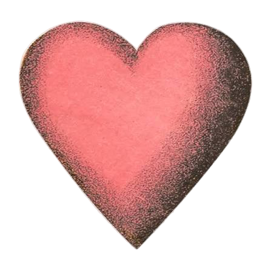
Anthropologists
LxW
The Sage
The Sage is incredibly mysterious and personable at the same time. They are incredibly wise and know how to integrate the exterior and interior lives. The sage is a fighter for the truth, and a lover for their beloved.
The Poet
The Poet longs to write their heart out on paper, or put their soul in a poem. They do not tend to be more inward or outward, and instead are either intently focused on the person in front of them or thinking of far off things. The poet loves only the deepest of relationships, and greatly appreciates beauty.
The Physician
The Physician is a great healer in many ways, and they take this life work of theirs very seriously. The good doctor is very capable and balances interior processing with lived experience. The physician values goodness in people and themselves, and wants to know those close to them even closer.
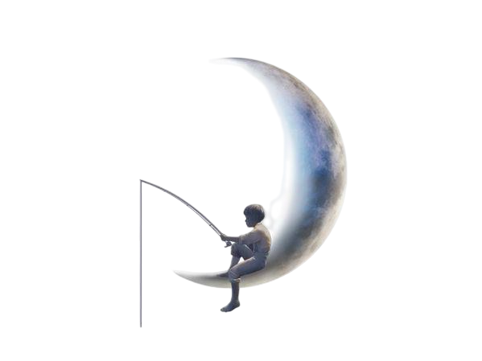
Ponderers
LxD
The Philosopher
The Philosopher knows not all questions can be answered, but asks them nonetheless. They are very contemplative and process their musings from within. The philosopher values meaningful relationships and always seeks the truth.
The Artist
The Artist has a particular taste for beauty and a great talent in the arts. They are self-reflective and have a strong interior life. The artist wishes to capture their muse in their work in order to know them deeper, and through their art they reveal the deepest parts of themselves.
The Nymph
The Nymph is the mysterious water spirit who adores the sea creatures and comes to the aid of lost sailors at sea. They can often seem lonely and melancholic, but they are always ready to spread joy. The nymph is inward, caring, values depth in relationships, and upholds goodness in all they do.